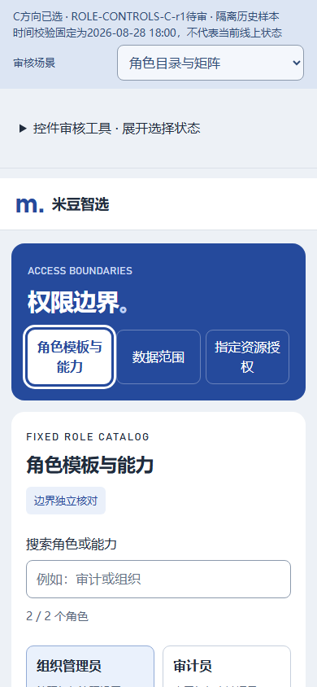
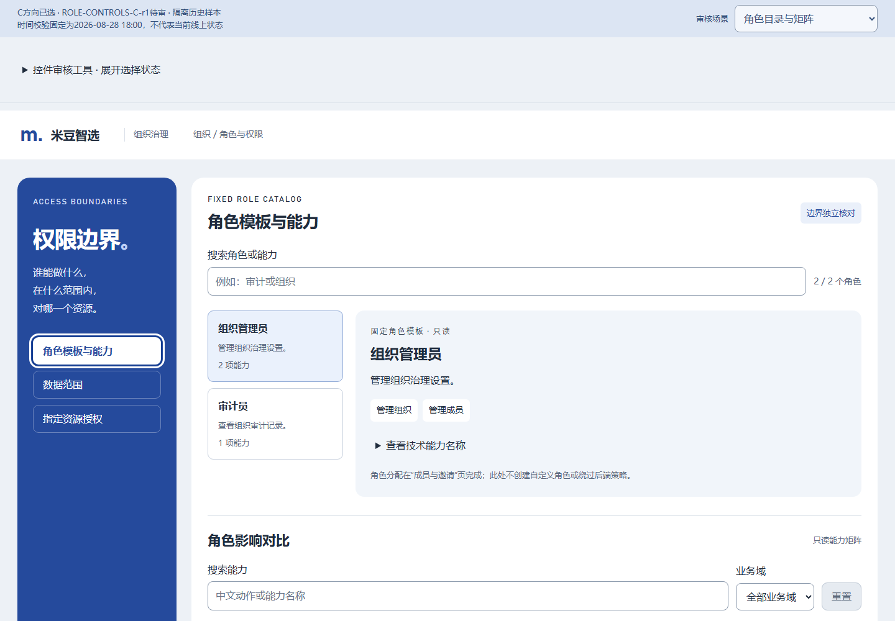
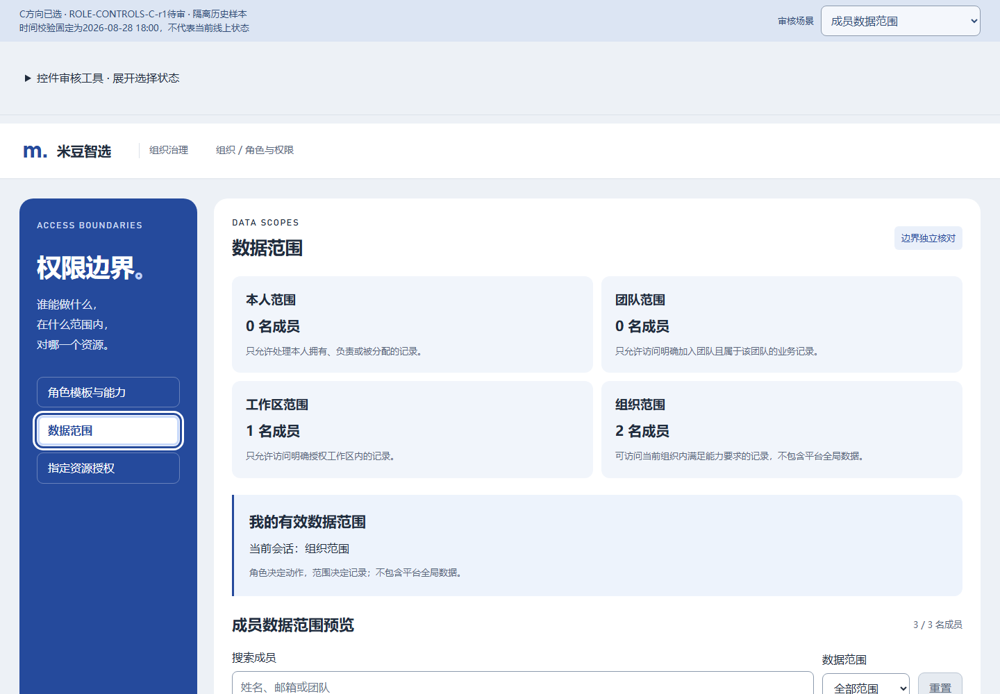
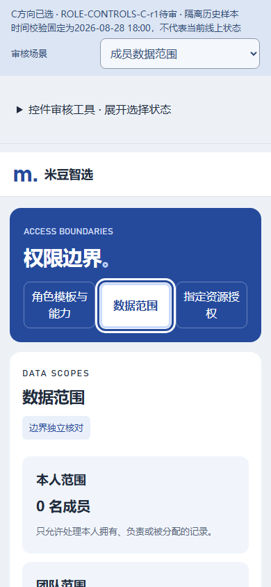
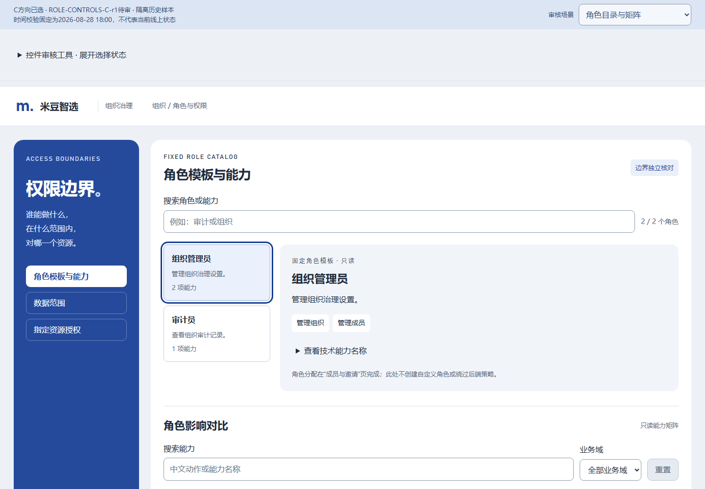

P31 / 角色与授权控件状态
C方向待审。保留详情复制UUID。仅隔离历史样本与控件输入演示，未修改生产。
点击图片查看原尺寸；状态图不等于所有组合或用户批准。交互稿
角色模板分区 / 未选
role.section.{section} · 非真实Vue/接口成功证明
角色模板分区 / 已选
role.section.{section} · 非真实Vue/接口成功证明
default · 1440pxdefault · 390pxhover · 1440px
hover · 390px
focus · 1440pxfocus · 390pxpressed · 1440pxpressed · 390px
数据范围分区 / 未选
role.section.{section} · 非真实Vue/接口成功证明
数据范围分区 / 已选
role.section.{section} · 非真实Vue/接口成功证明
default · 1440pxdefault · 390pxhover · 1440pxhover · 390pxfocus · 1440pxfocus · 390px
pressed · 1440px
pressed · 390px
指定授权分区 / 未选
role.section.{section} · 非真实Vue/接口成功证明
指定授权分区 / 已选
role.section.{section} · 非真实Vue/接口成功证明
组织管理员 / 未选
role.select.{roleCode} · 非真实Vue/接口成功证明
组织管理员 / 已选
role.select.{roleCode} · 非真实Vue/接口成功证明
 default · 1440pxdefault · 390pxhover · 1440pxhover · 390px
default · 1440pxdefault · 390pxhover · 1440pxhover · 390px
focus · 1440pxfocus · 390pxpressed · 1440pxpressed · 390px审计员 / 未选
role.select.{roleCode} · 非真实Vue/接口成功证明
审计员 / 已选
role.select.{roleCode} · 非真实Vue/接口成功证明
角色技术能力 / 收起
role.capability.technical.toggle · 非真实Vue/接口成功证明
角色技术能力 / 展开
role.capability.technical.toggle · 非真实Vue/接口成功证明
能力筛选重置
role.capability.filter.reset · 非真实Vue/接口成功证明
成员范围筛选重置
role.scope.filter.reset · 非真实Vue/接口成功证明
default · 1440pxdefault · 390pxhover · 1440pxhover · 390pxfocus · 1440pxfocus · 390pxpressed · 1440pxpressed · 390pxdisabled · 1440pxdisabled · 390px
展开创建授权
grant.create.form.toggle · 非真实Vue/接口成功证明
default · 1440pxdefault · 390pxhover · 1440pxhover · 390pxfocus · 1440pxfocus · 390pxpressed · 1440pxpressed · 390px
取消创建（保留草稿）
grant.create.form.toggle · 非真实Vue/接口成功证明
default · 1440pxdefault · 390pxhover · 1440pxhover · 390pxfocus · 1440pxfocus · 390pxpressed · 1440pxpressed · 390px
创建任务授权
grant.create.submit · 非真实Vue/接口成功证明
default · 1440pxdefault · 390pxhover · 1440pxhover · 390pxfocus · 1440pxfocus · 390pxpressed · 1440pxpressed · 390pxdisabled · 1440pxdisabled · 390pxbusy · 1440px busy · 390px
busy · 390px
创建机会授权
grant.create.submit · 非真实Vue/接口成功证明
default · 1440pxdefault · 390pxhover · 1440pxhover · 390pxfocus · 1440pxfocus · 390pxpressed · 1440pxpressed · 390pxdisabled · 1440px disabled · 390pxbusy · 1440pxbusy · 390px
disabled · 390pxbusy · 1440pxbusy · 390px
创建竞品授权
grant.create.submit · 非真实Vue/接口成功证明
default · 1440pxdefault · 390pxhover · 1440pxhover · 390pxfocus · 1440pxfocus · 390pxpressed · 1440pxpressed · 390pxdisabled · 1440px disabled · 390pxbusy · 1440px
disabled · 390pxbusy · 1440px busy · 390px
busy · 390px
创建供应链授权
grant.create.submit · 非真实Vue/接口成功证明
default · 1440pxdefault · 390pxhover · 1440pxhover · 390pxfocus · 1440pxfocus · 390pxpressed · 1440pxpressed · 390pxdisabled · 1440pxdisabled · 390pxbusy · 1440pxbusy · 390px
未选择动作 / 创建禁用
grant.create.submit · 非真实Vue/接口成功证明
disabled · 1440pxdisabled · 390px
选择资源类型
grant.create.type.change · 非真实Vue/接口成功证明
default · 1440pxdefault · 390pxhover · 1440pxhover · 390pxfocus · 1440pxfocus · 390px
全部授权 / 未选
grant.status.select.{status} · 非真实Vue/接口成功证明
default · 1440pxdefault · 390pxhover · 1440pxhover · 390pxfocus · 1440pxfocus · 390pxpressed · 1440pxpressed · 390px disabled · 1440pxdisabled · 390px
disabled · 1440pxdisabled · 390px busy · 1440pxbusy · 390px
busy · 1440pxbusy · 390px
生效中授权 / 已选
grant.status.select.{status} · 非真实Vue/接口成功证明
default · 1440pxdefault · 390pxhover · 1440pxhover · 390pxfocus · 1440pxfocus · 390pxpressed · 1440pxpressed · 390pxdisabled · 1440px disabled · 390pxbusy · 1440px
disabled · 390pxbusy · 1440px busy · 390px
busy · 390px
已到期授权 / 已选
grant.status.select.{status} · 非真实Vue/接口成功证明
default · 1440pxdefault · 390pxhover · 1440pxhover · 390pxfocus · 1440pxfocus · 390pxpressed · 1440pxpressed · 390px disabled · 1440px
disabled · 1440px disabled · 390pxbusy · 1440pxbusy · 390px
disabled · 390pxbusy · 1440pxbusy · 390px
已撤销授权 / 未选
grant.status.select.{status} · 非真实Vue/接口成功证明
default · 1440pxdefault · 390pxhover · 1440pxhover · 390pxfocus · 1440pxfocus · 390pxpressed · 1440pxpressed · 390pxdisabled · 1440pxdisabled · 390pxbusy · 1440pxbusy · 390px
已撤销授权 / 已选
grant.status.select.{status} · 非真实Vue/接口成功证明
default · 1440pxdefault · 390pxhover · 1440pxhover · 390pxfocus · 1440pxfocus · 390pxpressed · 1440pxpressed · 390pxdisabled · 1440px disabled · 390px
disabled · 390px busy · 1440pxbusy · 390px
busy · 1440pxbusy · 390px
当前页唯一授权 / 已选
grant.select.{grantId} · 非真实Vue/接口成功证明
default · 1440pxdefault · 390pxhover · 1440pxhover · 390pxfocus · 1440pxfocus · 390pxpressed · 1440pxpressed · 390px
授权技术编号 / 收起
grant.technical.toggle · 非真实Vue/接口成功证明
default · 1440px default · 390pxhover · 1440pxhover · 390pxfocus · 1440pxfocus · 390pxpressed · 1440pxpressed · 390px
default · 390pxhover · 1440pxhover · 390pxfocus · 1440pxfocus · 390pxpressed · 1440pxpressed · 390px
授权技术编号 / 展开
grant.technical.toggle · 非真实Vue/接口成功证明
default · 1440pxdefault · 390pxhover · 1440pxhover · 390pxfocus · 1440pxfocus · 390pxpressed · 1440pxpressed · 390px
唯一页 / 上一页禁用
grant.page.previous · 非真实Vue/接口成功证明
 disabled · 1440pxdisabled · 390px
disabled · 1440pxdisabled · 390px唯一页 / 下一页禁用
grant.page.next · 非真实Vue/接口成功证明
disabled · 1440px disabled · 390px
disabled · 390px
无授权 / 创建首条
grant.create.form.open · 非真实Vue/接口成功证明
default · 1440pxdefault · 390pxhover · 1440pxhover · 390pxfocus · 1440pxfocus · 390pxpressed · 1440pxpressed · 390px
当前状态为空 / 查看全部
grant.status.all · 非真实Vue/接口成功证明
default · 1440pxdefault · 390pxhover · 1440pxhover · 390pxfocus · 1440pxfocus · 390pxpressed · 1440pxpressed · 390px
撤销原因窗 / 确认提交
D-OG-REASON · 非真实Vue/接口成功证明
default · 1440pxdefault · 390pxhover · 1440pxhover · 390pxfocus · 1440pxfocus · 390pxpressed · 1440pxpressed · 390pxdisabled · 1440pxdisabled · 390px
撤销原因窗 / 取消
D-OG-REASON · 非真实Vue/接口成功证明
 default · 1440px
default · 1440px default · 390pxhover · 1440pxhover · 390pxfocus · 1440pxfocus · 390pxpressed · 1440pxpressed · 390px
default · 390pxhover · 1440pxhover · 390pxfocus · 1440pxfocus · 390pxpressed · 1440pxpressed · 390px撤销原因窗 / 关闭
D-OG-REASON · 非真实Vue/接口成功证明
default · 1440px default · 390pxhover · 1440pxhover · 390pxfocus · 1440pxfocus · 390pxpressed · 1440pxpressed · 390px
default · 390pxhover · 1440pxhover · 390pxfocus · 1440pxfocus · 390pxpressed · 1440pxpressed · 390px